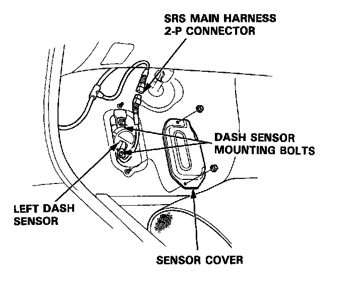
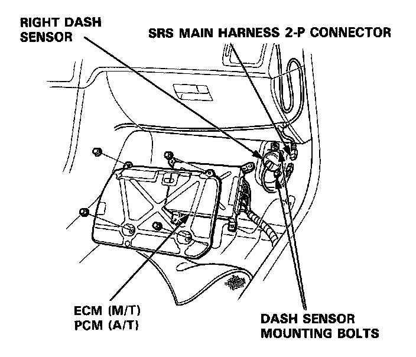
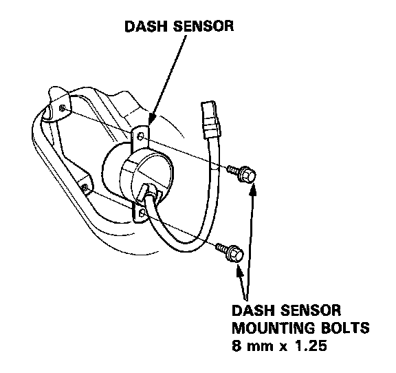
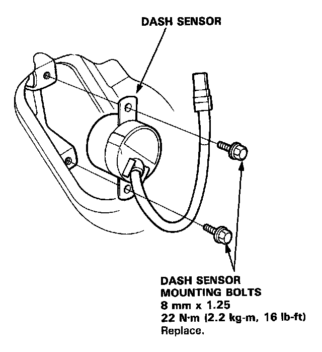

Impact Sensor: Service and Repair
Dash Sensor Replacement
CAUTION:
- Do not damage the sensor wiring.
- Do not install used SRS parts from another car. When repairing an SRS, use only new parts.
- Replace a sensor if it is dented. cracked or deformed.
NOTES: Before disconnecting the battery cables, be sure you get the customer's anti-theft radio code number.
1. Disconnect the battery negative cable, then the positive cable.
2. Before disconnecting any part of the SRS wire harness, install the short connectors - refer to the "Short Connector Installation" procedure.
3. Left Dash Sensor:
Remove the footrest and left door sill molding, then pull the carpet back and remove the sensor cover.

4. Right Dash Sensor:
Remove the right door sill molding and pull back the carpeting. Remove the ECM (M/T) or PCM (A/T).

5. Remove the two dash sensor mounting bolts, then remove the left or right dash sensor.

CAUTION:
- Be sure to install the harness wires so that they are not pinched or interfering with other car parts.
- Carefully inspect the new dash sensor(s) for signs of being dropped or improperly handled, such as dents, cracks or deformation.
- For the SRS to function properly, the right and left sensors must be installed on the proper sides.
6. Install the sensor securely.

7. Reinstall all other removed parts.
8. Remove the short connectors from the front passenger's airbag connector, and from the SRS main harness connector.
9. Reconnect the front passenger's airbag 3-P connector to the SRS main harness connector.
10. Remove the short connectors from the driver's air-bag connector and from the cable reel 3-P connector.
11. Reconnect the driver's airbag 3-P connector to the cable reel 3-P connector. Attach the short connector (RED) to the access panel, then reinstall the panel on the steering wheel.
12. Remove the short connectors (RED) from the seat belt pretensioners, then attach them to their holders.
13. Reconnect the left side wire harness 3-P connector to the driver's seat belt pretensioner and the main wire harness 3-P connector to the front passenger's seat belt pretensioner.
14. Reinstall the quarter trim panel.
15. Reconnect the battery positive cable, then the negative cable.
16. After installing the dash sensor, confirm proper system operation: Turn the ignition ON (II): The instrument panel SRS indicator light should go on for about six seconds and then go off.
17. Enter the customer's code number to restore radio operation.